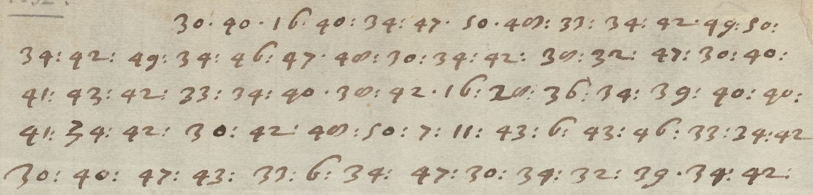
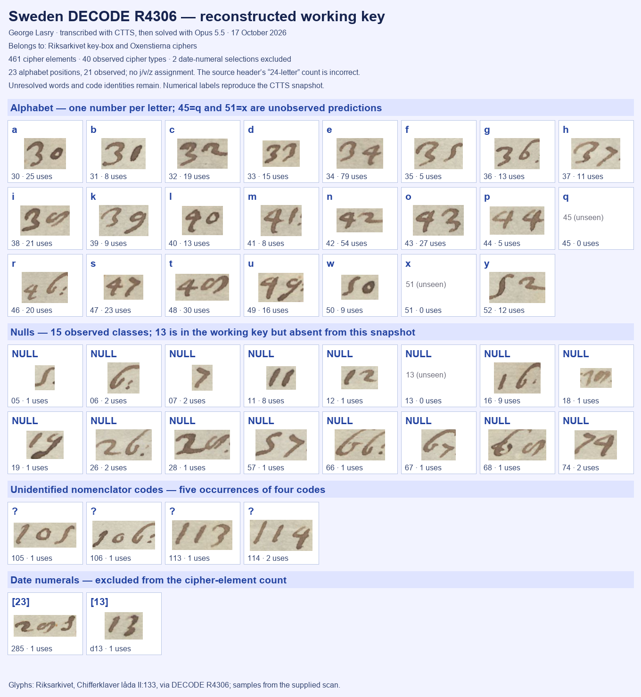

At a glanceCiphertext-only break · partial (99% of the cipher)
- Belongs to
- Riksarkivet key-box and Oxenstierna ciphers.
- The letter
- Unidentified Dutch-language correspondent reporting on passports and envoys; year and correspondents unproved. A pencilled “1632?” is visible on the scan.
- Where
- Riksarkivet, Stockholm, Chifferklaver låda II:133; DECODE R4306. This contribution covers one cipher page, not all three record attachments.
- The cipher
- 461 cipher elements: alphabetical number substitution with 34 null occurrences and five occurrences of four unresolved codes. Two date-numeral selections are counted separately.
- How it was solved
- Transcribed with CTTS, then solved with Opus 5.5. No historical decipherment or matched archive key used.
- Credit
- George Lasry directed the work and supplied the CTTS material, edited Dutch text, English translation and context. Codex checked the inventory and five-line excerpt and prepared this contribution.
- Still open
- 105, 106, 113 and 114 (and 101 in a note on the address leaf), with no key in the Chifferklaver box; doubtful words and the last sentence; year and sender. The recipient was at Amsterdam.
01 Cryptanalysis and visual key
No interlinear or marginal decipherment is visible on the supplied page. The key is a monoalphabetic substitution with nulls and an unresolved nomenclator. Values 30–52 form a 23-position alphabet: 21 occur, while 45=q and 51=x are predictions. There is one value per letter, with no homophones. Fifteen null classes occur; null 13 is listed but unobserved. The source key’s “24-letter” header is a counting error.
The 35 CTTS rows contain 463 selections: 422 letter occurrences, 34 nulls, five unresolved-code occurrences, and two date numerals. Thus there are 461 cipher elements and 40 observed cipher types. The CTTS date labels 285 and d13 represent 23 and 13; they are excluded from the cipher count. Assignment coverage is 422/427 non-null cipher occurrences (98.83%), which does not establish semantic accuracy.


02 The Dutch reading and translation
The following two texts are preserved as supplied, including their uncertainty marks. The Dutch is an edited, normalized reading, and the English includes interpretive expansions.
Decrypted text (edited, normalized)
Translation
Contributor’s translation notes
- U.L.: Uwe Liefde, explained by the contributor as a conventional address, roughly “Your Honour” or “dear Sir”.
- gade gegeven: interpreted as “kept watch on” or “observed”.
- Codes: 106, 114 and 105 suggest rulers, states or persons; “114 105 gesanten” and movement to 114 may point to a sovereign or court. These are contextual possibilities, not identified key values. Code 113 is also unresolved.
- Last sentence: “Blyf ic noch wat” is the contributor’s least certain reading.
03 Five lines of mechanical decryption
Exactly CTTS/manuscript lines 1–5: 73 selections, yielding 62 literal letters. Nulls omitted; no word spacing, u/v normalization, letter substitutions or repairs.
alleswtdenuw enuerstaenicsal mondelingekll menantwoorden alsodesaecken
Lines 3–4 retain the literal ekll / men; the supplied edition instead marks [gekl…men?]. Line 5 is alsodesaecken, so the restored wording “Als o[o]c des saecken” is not exact mechanical output. This short excerpt is below the statistical validator’s 80-letter threshold; it does not establish full-text accuracy.
04 Historical context and research
Contributor’s interpretation: the writer appears to be an agent or informant reporting to a superior. Passports, rivalry between envoys and their departure fit diplomatic activity, possibly a congress or mediation. The Swedish collection suggests a possible Swedish connection, and the references to 23 February and 13 March suggest writing later than the cited March letter. Late March or April is a working suggestion, not a recovered date.
What was checked: the public DECODE record gives only the broad range 1600–1699, leaves the correspondents and languages blank, and still carries an unresolved catalogue status. Its general collection note concerns Oxenstierna correspondence, not an attribution of this specific letter. The supplied scan visibly carries a pencilled “1632?”. Neither this annotation nor archive custody proves the year or recipient. The earlier survey reports an Amsterdam address on another view; that view was checked on 18 October 2026 and does read Amsterdam (section 05).
The earlier group survey records unsuccessful attacks on R4306 and tests of keys R4296/R4310. Note added 18 October 2026: that attempt (21 September 2026: simple and homophonic annealing over quadgram models in ten languages, Dutch among them, on two transcriptions; box keys R4310 and R4296 rejected) had its own entry from 14 October, which is now folded into this one; its transcriptions are kept in targets/sweden4306/project_attempt/. No complete earlier plaintext was located in a limited opening-phrase search. No exhaustive publication search or first-publication claim is made. The identities of the four codes and the correspondents remain open.
05 Method, verification and remaining gaps
The contributor confirms the workflow: CTTS transcription, then Opus 5.5 solution. The supplied key describes crib dragging and an ordered number alphabet. Codex’s digit-box merging preceded the final snapshot; the source key records subsequent corrections. The CTTS position-label histogram matches all 463 transcription selections exactly. The five-line excerpt was recomputed directly from the submitted key and checked against the image.
The full edited reading remains distinct from mechanical output. Four codes, doubtful words, the final sentence, historical identities and dating remain unresolved. No new code identities or a full mechanical decryption are supplied.
Escalation, 18 October 2026 (proposals for George Lasry’s review)
Claude worked the open pieces after publication, on DECODE images. George’s key, reading and translation are unchanged.
- The other two views. The address leaf reads Aen Mr. ?ilick (Wilick?) … Amsterdam, which confirms the Amsterdam address; the wrapper is II:104, “1600– Chifferbref till … i Amsterdam”.
- A cipher note on the address leaf, three lines in the same numerals, partly torn: it contains code 113 again and a fifth code, 101. Under the letter’s key it gives ler., … hlden / [113] naeldan / kn [101] na..mk, which is not Dutch; too short and damaged to fit a variant key.
- Every key in the box. The archivists’ wrappers of the Chifferklaver keys give each key’s a values; none of the 43 labelled keys has a = 30, and the unlabelled keys and the never-fetched R4319–R4321, opened page by page, have no alphabet a=30 … y=52. A faint list on R4306’s wrapper (Tz Rex Polon., Vz Victoria …) is a ghost of the neighbouring Brandenstein key R4305, not this letter’s nomenclator.
- The template. R4319 (Jacob du Moulin, 1650) is built the same way at another offset: a sequential alphabet (a = 20), then an alphabetical nomenclator from 101 (101 Archangel … 112 Ambassadeur, 113 Amsterdam). If R4306’s key followed it, codes 101–114 would be words beginning with A or B. A proposal only; five occurrences cannot test it.
- Doubtful words. The scribe writes 0 as a tailed o, so 30/38 and 40/43 are ambiguous on the only image (ekll / men, Mar…y).
Remaining gaps and their outside blockers: the codes (no key material on DECODE), the doubtful words (illegible digit forms), the address-leaf note (too short), year and sender (only Riksarkivet provenance records could settle them).
Full texts
The transcription and the decryption of every document on this page, so that the reading can be used and checked. Short files are shown here; all are in the repository.
R4306, Riksarkivet Chifferklaver låda II:133, a Dutch cipher letter to Amsterdam, [1632?] (George Lasry)
A Dutch letter addressed 'Aen Mr. ?ilick ... Amsterdam', pencilled 1632?: the writer will answer orally, reports jealousy beginning between the [106] and the [114] [105] envoys, knows [113]'s whole intention and has kept a close watch on him, and has received the recipient's letters of 23 February and 13 March. Reading and translation are George Lasry's (transcribed with CTTS, solved with Opus 5.5); the project_attempt/ files are this project's earlier transcriptions, and texts/address_note.md the cipher note on the address leaf, with Brett Burford's proposed reading, which his reading does not cover.
Transcription
# 1.png 30;40;16;40;34;47;50;48;33;34;42;49;50; 34;42;49;34;46;47;48;30;34;42;38;32;47;30;40; 41;43;42;33;34;40;38;42;16;28;36;34;39;40;40; 41;34;42;30;42;48;50;07;11;43;06;43;46;33;34;42; 30;40;47;43;33;06;34;47;30;34;32;39;34;42; 39;30;42;47;34;57;67;34;46;36;46;05;07;43; 48;34;42;36;16;26;34;50;38;16;32;37;48; 34;47;52;42;34;42;33;34;41;34;48;31; 46;34;42;36;34;42;30;42;48;50;43;43;46;48; 43;44;49;40;38;34;33;34;42;39;34;46; 47;43;34;32;39;41;34;48;44;30;47;44;43; 43;46;48;34;42;37;38;34;46;31;34;36; 38;42;48;38;30;26;74;40;43;16;19;49;47; 52;34;48;49;47;16;47;34;42;106;34;42; 114;105;36;34;47;30;42;16;12;48;11;34;42; 47;52;42;31;34;52;33;34;49;30;42;37;38; 34;49;34;46;48;46;43;32;39;34;42;38;32; 50;34;11;43;34;48;113;47;52;42;36;30;42; 48;47;34;42;49;66;68;43;11;43;46;42;34; 41;34;42;50;30;48;37;52;38;42;33;34;42; 47;38;42;37;34;11;16;34;35;48;49;34;40; 33;34;42;37;34;31;38;32;43;43;32;36;30; 34;48;36;34;11;36;34;49;34;42;37;52;38; 47;42;30;33;34;42;114;38;32;46;49;47; 48;42;30;32;37;48;42;43;32;37;33;30; 32;37;48;47;52;33;30;48;38;32;47;38;34; 32;39;31;34;42;43;35;48;42;38;74;48; 34;42;47;32;43;49;36;34;11;34;42;44;34; 46;52;32;39;34;40;49;40;48;50;34; 34;31;46;34;49;34;42;43;42;48;35;30;42; 36;34;42;49;30;42;33;34;42;285;35;34;31; 46;49;30;46;52;34;42;d13;41;30;46;38;52; 43;41;34;16;34;42;42;43;11;43;33;38;36;34;47;30;34;32;39;34; 31;40;52;35;38;32;42;43;32;37;50;30;48;33;18;34;38;41;44;43;46;48; 34;34;46;48;
Transcription
30 40 16 40 34 47 50 48 33 34 42 49 50 34 42 49 34 46 47 48 30 34 42 38 32 47 30 40 41 43 42 33 34 40 38 42 16 28 36 34 39 40 40 41 34 42 30 42 48 50 07 11 43 06 43 46 33 34 42 30 40 47 43 33 06 34 47 30 34 32 39 34 42 39 30 42 47 34 57 67 34 46 36 46 05 07 43 48 34 42 36 16 26 34 50 38 16 32 37 48 34 47 52 42 34 42 33 34 41 34 48 31 46 34 42 36 34 42 30 42 48 50 43 43 46 48 43 44 49 40 38 34 33 34 42 39 34 46 47 43 34 32 39 41 34 48 44 30 47 44 43 43 46 48 34 42 37 38 34 46 31 34 36 38 42 48 38 30 26 74 40 43 16 19 49 47 52 34 48 49 47 16 47 34 42 106 34 42 114 105 36 34 47 30 42 16 12 48 11 34 42 47 52 42 31 34 52 33 34 49 30 42 37 38 34 49 34 46 48 46 43 32 39 34 42 38 32 50 34 11 43 34 48 113 47 52 42 36 30 42 48 47 34 42 49 66 68 43 11 43 46 42 34 41 34 42 50 30 48 37 52 38 42 33 34 42 47 38 42 37 34 11 16 34 35 48 49 34 40 33 34 42 37 34 31 38 32 43 43 32 36 30 34 48 36 34 11 36 34 49 34 42 37 52 38 47 42 30 33 34 42 114 38 32 46 49 47 48 42 30 32 37 48 42 43 32 37 33 30 32 37 48 47 52 33 30 48 38 32 47 38 34 32 39 31 34 42 43 35 48 42 38 74 48 34 42 47 32 43 49 36 34 11 34 42 44 34 46 52 32 39 34 40 49 40 48 50 34 34 31 46 34 49 34 42 43 42 48 35 30 42 36 34 42 49 30 42 33 34 42 35 34 31 46 49 30 46 52 34 42 41 30 46 38 52 43 41 34 16 34 42 42 43 11 43 33 38 36 34 47 30 34 32 39 34 31 40 52 35 38 32 42 43 32 37 50 30 48 33 18 34 38 41 44 43 46 48 34 34 46 48
Transcription
# R4306 transcription (Riksarkivet, "1632?"; archive folder cover reads "1600- Chifferbref ... i Amsterdam", II:104) # Digit notes (this hand): 3 = open "z"-like with top hook, often with long lead-in stroke (30/33 start like a "Z"); # 4 = closed "q"/"4" with short tail staying on line; 9 = "g"-shaped with long descender below line (49, 39); # 7 = small "z/7" angled stroke, sits on line (47, 37, 57); 1 = plain vertical minim; # 0 = small loop, often closed with a flourish looking like "ø"/"o" (40/30 then read as 40/30, not 49/39); # 2 = "z" with long trailing horizontal (42, 32, 52); 6 = tall looped ascender; 5 = "S/ʃ"-shaped. # Separators ":" or "." ignored. Line 2 "70/30" readings: a few 30s written with a narrow 3 resembling 7 -> marked '?'. ## IMG_R4306_I25832_P_hi.jpeg 30 40 16 40 34 47 50 40 33 34 42 49 50 34 42 49 34 46 47 40 30? 34 42 30 32 47 30 40 41 43 42 33 34 40 30 42 16 20 36 34 39 40 40 41 34 42 30 42 40 50 7 11 43 6 43 46 33 34 42 30 40 47 43 33 6 34 47 30 34 32 39 34 42 39 30 42 47 34 57 67 34 46 36 46 5 7 43 40 34 42 36 16 26 34 50 30 16 32 37 40 34 47 52 42 34 42 33 34 41 34 40 31 46 34 42 36 34 42 30? 42 40 50 43 43 46 49? 43 44 49 40 30 34 33 34 42 39 34 46 47 43? 34 32 39 41 34 40 44 30? 47 44 43 43 46 40 34 42 37 34? 34 46 31 34 36 30 42 40 30 30 26 34 40 43 16 19 49 47 52 34 40 49 47 16 47 34 42 106 34 42 114 105 36 34 47 30? 42 16 12 40 11 34 42 47 52 42 31 34 52 33 34 49 30 42 37 30 34 49 34 46 40 46 43 32 39 34 42 30 32 50 34 11 13? 34 40 113 47 52 42 36 30 42 40 47 34 42 49 66 60? 43 11 43 46 42 34 41 34 42 50 30 40 33? 52 34 42 33 34 42 47 30 42 37 34 11 16 34 35 40 49 34 40 33? 34 42 33? 34 31 30 32 43 43 32 46 30 34 40 36 34 11 36 34 49 34 42 37 52 34 47 42 30 33 34 42 114 30 32 46 49 47 44? 42 30 32 37 40 42 43 32 37 33? 30 32 37 40 42 52 33 30 40 30 32 47 30 34 32 39 31 34 42 43 35 40 42 30 34 49? 34 42 47 32 43 49 36 34 11 34 42 44 34 46 52 32 39 34 40 [arrow ->] 49 40 40 50 34 34 31 46 34 49 34 42 43 42 40 35 30 42 36 34 42 49 30 42 33 34 42 203 35 34 31 46 49 30 46 52 34 42 13? 41 30 46 30 52 43 41 34 16 34 42 42 43 11 43 33 30 36 34 47 30 34 32 39 34 131 40 52 35 30 32 42 43 32 37 50 30 40 33 30 34 30 41 49 43 46 40 34 34 46 40 ## IMG_R4306_I25833_P_hi.jpeg # Main area is mirrored show-through of page 1 (not transcribed). Genuine writing: address/superscription # [A Mr ?ilick (?)] [tot?] [Amsterdam] with paraph; wax seal at left; and a 3-line numeric note written # vertically in the right margin (read rotated 90 deg; a paper loss after "46" in line 1 destroys 1-2 numbers). 40 34 46 ?? 37 40 33 34 42? 113 42 30 34 40 33 30 11 42 30? 42 101 42 30 27 11 41 39 ## IMG_R4306_I25834_P_hi.jpeg # No cipher. Left: blank leaf with faint show-through of a short list. Right: modern archive wrapper in pencil/ink: # [II:104] [1600-] [Chifferbref] [till?] [i Amsterdam]
Transcription
# R4306 page 1, v2: digit variants NOT normalised.
# 3 = open z-like 3 with top hook/lead-in; 7 = narrow '7'/')'-like form in the tens position (70,74,77...).
# o = 0 with extra loop/flourish ('ø'/'00'); 0 = plain small round 0. '?' = variant form uncertain.
## IMG_R4306_I25832_P_hi.jpeg
30 40 16 40 74 47 50 4o 77 34 42 49 50
34 42 49 34 46 47 4o 70 34 42 3o 32 47 30 40
41 43 42 33 74 40 3o 42 16 2o 36 74 39 40 40
41 34 42 30 42 4o 50 7 11 43 6 43 46 33 34 42
30 40 47 43 37 6 34 47 30 34 32 79? 34 42
39 30 42 47 34 57 67 34 46 36 46 5 7 43
4o 34 42 36 16 26 34 50 3o 16 32 37 4o
34 47 52 42 34 42 33 34 41 34 4o 31
96 34 42 36 34 42 70 42 4o 50 43 93 46 4o
43 44 49 40 3o 34 33 34 42 39 34 96
97 97 34 72 39 41 34 4o 44 70 47 44 93
43 46 4o 34 42 37 74 34 46 31 34 36
3o 42 4o 3o 30 26 74 40 43 16 19 49 97
52 74 4o 49 97 16 97 34 42 106 Z4 42
114 105 36 34 97 70 42 16 12 4o 11 34 42
97 52 42 31 34 52 33 34 49 30 42 37 7o
74 49 74 46 4o 96 93 32 39 34 42 3o 32
50 34 11 13? 34 9o 113 97 52 42 36 30 42
9o 97 34 42 49 66 6o 93 11 93 96 42 34
41 34 42 50 30 9o 77 52 34 42 33 34 42
97 7o 42 37 34 11 16 74 35 9o 49 34 40
77 34 42 77 34 31 7o 32 93 93 32 96 70
74 4o 36 74 11 36 34 99? 34 42 37 52? 34
97 42 30 33 34 42 114 7o 32 96 99? 97
44? 42 70 32 77 9o 42 43 32 37? 77 30
32 37 9o 42 52 33 70 9o 3o 32 97 7o 34
32 39 31 34 42 43 35 9o 42 3o 74 99?
74 42 97 72? 93 99 76 34 11 74 42 44 34
46 52 32 39 34 40 [arrow ->] 49 40 9o 50 34
74 31 96 34 99 74 42 93 42 9o 35 30 42
36 74 42 99 30 42 33 34 42 2o3 75? 34 31
96 99 30 46 52 74 42 13? 41 70 46 3o 52
43 41 74 16 74 42 42 93 11 93 33 3o 76 34 97 30 74 32 39 34
131 40 52 35 3o 32 42 43 32 37 50 70 9o 33 7o 74 3o 41 44 93 96 9o
34 74 46 9o
# Caveats: 9-vs-4 in the tens was read as 9 when the first stroke has a long descender below the line;
# the q-form in "42" was left as 4 throughout (nearly all 42s are written that way), so 42/92 is NOT split.
# 'Z4' = 3 written as a descending 'ʒ'. The 7-vs-3 and o-vs-0 calls are by eye at ~1x and inconsistent
# risk is real; treat per-token variant counts as indicative.Decryption
Alles wt den uwen verstaen. Ic sal mondelinge [gekl…men?] antwoorden. Als o[o]c des saecken kan seer grooten gewichte syn ende metbrengen, antwoort op U.L. [v]ersoeck met paspoorten hier. Begint ialousye tussen [106] en [114] [105] gesanten; syn beyde van hier vertrocken. Ic weet [113] syn gantsen voornemen, wat hy inden sin heeft. Wel, den heb ic ooc ga[d]e gegeuen. Hy is naden [114]. Ic rust nacht noch dacht, sy dat ic sieck ben oft niet, en schouw geen peryckel. U.L. twee breuen ontfangen vanden 23 Febr. en 13 Mar[t]y, om een noodige saecke. Blyf ic noch wat, die importeert.
Decryption
alleswtdenuw enuerstaenicsal mondelingekll menantwoorden alsodesaecken
Decryption
# R4306, the cipher note on the address leaf (image I25833): this project's finding and Brett Burford's reading Not part of George Lasry's reading (`reading.txt`), which covers the one cipher page. Copied verbatim from NOTES.md, "Findings of 18 October 2026 (proposals for George Lasry's review)" (22 Oct 2026). Both readings are proposals. - **A cipher note on the address leaf, not counted before.** Three lines in the right margin, in the same numerals, part of line 1 torn away: `40:34:46. , [torn] 37:40:33:34:42` / `113:42:30:34:40:33.30:11:42:` / `39:42: 101. 42:30:27:11:41:39`. With the letter's key: *ler., … hlden / [113] naeldan / kn [101] na..mk*. That is not Dutch. Caesar offsets of the alphabet and the R4287 sequential key fail too. It adds a fifth code value, **101**, and a second occurrence of **113**. **21 Oct 2026, Brett Burford (issue #47):** read the scribe's tailed *o* as 8, as this page's own doubtful words already allow (30/38, 40/43), and the note turns Dutch: line 1 `40:34:46` *ter* (40 -> 48), line 2 `42:30:34:40:33.30:11:42` *niet dan* (42 38 34 48 33 30, 11 a null), line 3 `39:42: 101. 42:30` *in [101] na...* (39 -> 38). A hole loses two or three groups at the start. It continues the letter after *importeert*. Proposal: each digit still to be checked on image I25833 (the DECODE cookie had expired when this was written).
Translation
I have understood everything in yours. I shall answer [it] orally [when I come?]. Since these matters may be of very great weight and bring great consequences: [here is my] answer to Your Honour’s request concerning passports here. Jealousy is beginning between the [106] and the [114] [105] envoys; both have left here. I know [113]’s whole intention, what he has in mind. Well, I have also kept a close watch on him. He has gone to the [114]. I rest neither night nor day, whether I am ill or not, and shrink from no danger. I have received Your Honour’s two letters of 23 February and 13 March, about a necessary matter. I am staying on here a while longer, which matters.
Key: key.txt
06 Sources and credit
- George Lasry’s supplied CTTS material, edited text, translation and context, 17 October 2026. Transcribed with CTTS, then solved with Opus 5.5.
- DECODE R4306, Riksarkivet, Chifferklaver låda II:133.
- Earlier survey notes, 21 September 2026, retained as dated project history.
The repository folder contains the original supplied reading and translation, complete contributor context, key and transcription, visual key, counts and reproducible five-line check.
Cite this page
George Lasry, Brett Burford and Daniel Bourdeau, “R4306: a Dutch diplomatic report”, Cyphersolver, posted 18 October 2026, updated 20 October 2026, https://cyphersolver.com/sweden4306.html.